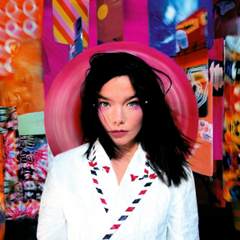
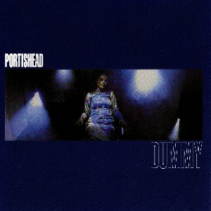

Post. Björk
The music is excellent and symphonically charged, with some electronic passages, but Bjork's voice is one that you will either love or hate.

Dummy. Portishead
When the pawn... Fiona Apple

Mezzanine. Massive Attack
Insomnia. Faithless
"The biggest curveball that 90s music threw us was, of course,
grunge. The larger impact of grunge was that it normalized what was
once deemed countercultural"

Superunknown. Soundgarden
OK Computer. Radiohead
Progress is a bitch, but don't let the machines, or their masters, grind you down.